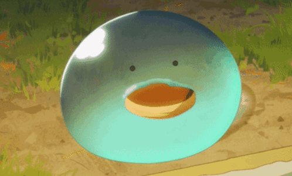

Odin Recipes

all of these recipes actually inspired by an isekai anime "Tondemo Skill de Isekai Hourou Meshi".
Pot-au-Feu (French Beef Stew)
Teriyaki Rockbird with Onion Soup
Salt-Grilled & Foil-Grilled King Trout